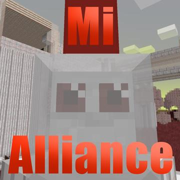
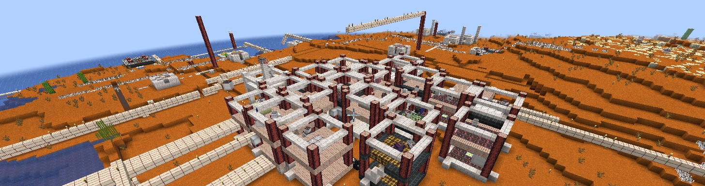

MI Alliance

La Mi alliance è la mia mod di minecraft preferita, aggiunge degli esseri bianchi chiamati Mi provenienti da un pianeta di nome "mitopia" per conquistare il mondo, per contrastarli puoi crescere i tuoi Mi personali etc

I mi sono molto intelligenti e sono in grado di costruire "città" chiamate Colonie, protette da torette, mine e filo spinato. Sono anche in grado di creare veicoli come Carri armati, Aerei, Navi etc
L'autore di questa mod è Blubbee
----------------------------------------
Pagina della mod----------------------------------------
Playlist su Youtube dei tutorials della M.A.----------------------------------------
- Il team di SkyBase, ADMINSPACE, MB delta e DeltaQuest
- Adam